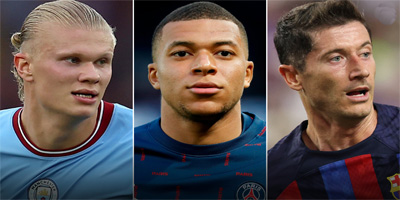

Top 5 Goals of the Season

From long-range screamers to acrobatic volleys, this season has been packed with breathtaking goals. We've compiled a list of the top 5 goals that left fans awe-inspired and set social media ablaze. Witness the brilliance and technique of these extraordinary goals that will forever be etched in football history.
By John Doe
June 1, 2023
Player Spotlight: Cristiano Ronaldo

Cristiano Ronaldo, the legendary Portuguese forward, has made an indelible mark on the football world. From his incredible goal-scoring prowess to his unmatched work ethic, Ronaldo's journey is nothing short of extraordinary. In this player spotlight, we delve into Ronaldo's career highlights, his impact on the teams he has played for, and his enduring legacy.
By Jane Smith
May 28, 2023
Interview with Lionel Messi
We had the privilege to sit down with Lionel Messi, the Argentine maestro, and gain insights into his footballing journey. Messi opens up about his early life, his passion for the game, and the challenges he has faced along the way. Get a glimpse into the mind of one of the greatest players to have ever graced the football pitch.
By Mark Johnson
May 25, 2023